Vecauces pils
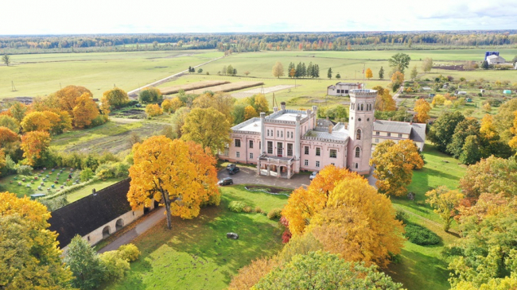
Akadēmijas iela 11, Vecauce
Tālr.: mob.t.: 29195959
E-pasts: vecaucespils@gmail.com
Interneta vietne: www.vecauce.lv
Vietā, kur robežojas Rietumkurzemes augstiene un Zemgales līdzenums, cieši līdzās Auces pilsētai, 19.gs. ainavu parka ieskauta, slejas viena no pirmajām neogotikas stilā celtajām pilīm Latvijā - Vecauces pils. Vecauces muižas apbūve ar 19.gs celto kungu māju- Vecauces pili, saimniecības ēkām un ainavu parku piešķir nesteidzīgajai mazpilsētas dzīvei īpašu šarmu un neuzkrītoši atgādina par nesaraujamo saikni, kas vieno bijušo Vecauces muižu, Vecauces mācību un pētījumu saimniecību un Auces pilsētu.
Vecauces evaņģēliski luteriskā baznīca
Akadēmijas iela 1, Vecauce
Vecauces ev. lut. baznīca ir valsts nozīmes arhitektūras piemineklis. Baznīca pirmo reizi uzcelta kā koka būve 1667. gadā, bet pēc zibens spēriena 1729. gadā tā nodega. Mūra baznīca celta 1744. gadā, savukārt 1866. gadā Mēdemu valdīšanas laikā baznīcu paplašināja līdz 500 sēdvietām, izgatavoja jaunu altāri, kanceli un uzstādīja Liepājas ērģeļmeistara Kārļa Hermaņa būvētas ērģeles. Altāris, kancele un sakristejas durvis ir vienots neogotiskā stilā būvēts ansamblis. Dievkalpojumi notiek katru svētdienu plkst.14.00.
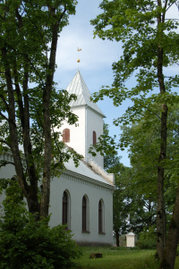 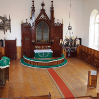 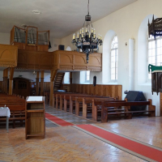Auces muzejs
Jelgavas iela 1a, 2.stāvs, Auce
Muzejā skatāma vēstures ekspozīcija par Auces pilsētu. Ir apkopotas senās Auces pilsētas bildes, dažādi vēsturiski skati, rakstiskas vēstures liecības un daudzas citas ar Auci saistītas lietas
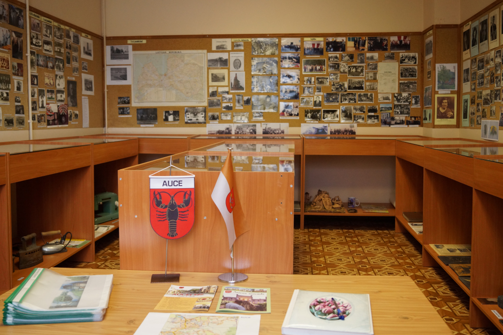Auces Amatu māja
Raiņa iela 14, Auce
Studijā darbojas 15 dalībnieces. Kolektīvs ir daudzveidīgs un izpalīdzīgs. Pieredzes bagātās audējas „neslēpj sveci zem pūra”, bet steidz palīgā ar padomu un praktisku palīdzību tām, kuras vēl tikai apgūst aušanas prasmes. Čaklās TLMS „Auce” audējas labprāt parādīs un ļaus pašiem iemēģināt roku aušanā. Iespējams iegādāties jau gatavus izstrādājumus vai arī pasūtīt pēc pašu vēlmēm. Mīļi aicināti visi, kam ir vēlme darboties studijā, iemēģināt roku aušanā prasmīgu un zinošu audēju vadībā!
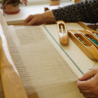 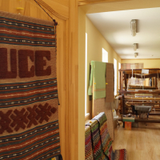 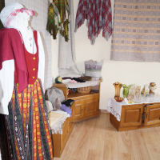Saules pulkstenis
Bēnes iela 2, Auce
Saules pulkstenis izveidots Auces novada ģerbonī attēlotā pasta raga veidolā, kuru aptver nošu loks ar pirmajām taktīm no novada dziesmas “Jauka dzīve Vecaucē”. Tā pamatnē ir iestrādāti mūsu novada sadarbības partneru pašvaldību ģerboņi. Rags ir veidots kā paralēlu plakņu kopa, pretskatā radot telpiska viscaur metāliska objekta iespaidu, bet sānskatā iegūstamā caurredzamība piešķir tam viegluma iespaidu.
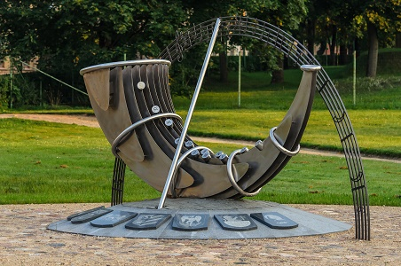Auces dzelzceļa stacija
Dzelzceļa stacija, Auce
1873. gadā atklāja dzelzceļa līniju Jelgava - Mažeiķi, tad arī tika uzbūvēta stacijas ēka, kas sākotnēji tika būvēta no koka, bet 1985.gadā apmūrēta ar ķieģeļiem. Dzelzceļa un stacijas “Auce” ierīkošana uz Vecauces muižas zemes kļuva par spēcīgu impulsu šīs vietas saimnieciskajai attīstībai. 1889. gadā Vecauces muižas īpašnieks grāfs Mēdems sāka pārdot apbūves gabalus, un stacijas tuvuma dēļ tie bija ļoti pieprasīti. Šādi izveidojās Auces pilsētiņa, kas pārņēma dzelzceļa stacijas nosaukumu. Auces dzelzceļa stacija ir nozīmīga ar to, ka tā bija pirmā vieta Latvijā, kur 1921. gada 26. janvārī Z.A. Meierovics paziņoja par jaunās valsts starptautisku atzīšanu. Pie stacijas atrodas piemiņas akmens 1941. un 1949. gadā represētajiem. Stacijas ēkas pirmajā stāvā biedrība “Auces stacija ” izveidojusi apskatei senlietu kolekciju, kas sakrāta vairāku gadu garumā.
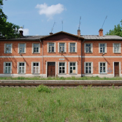 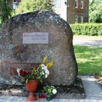 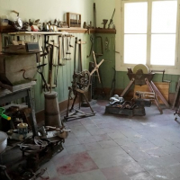